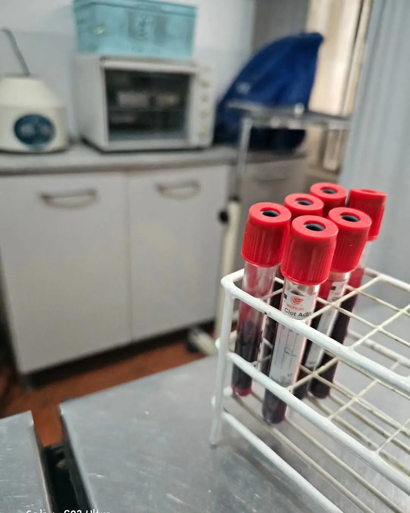

Services d'exportation · Sérologie
Analyse de sang pour la rage
C'est l'examen qui retarde le plus de voyages lorsqu'il est fait tard, et celui qui apporte le plus de tranquillité lorsqu'il est fait à temps.
Nous effectuons le prélèvement et gérons l'analyse de sang pour la rage que votre destination exige. Écrivez-nous et nous commençons dès aujourd'hui le calendrier pour arriver à temps.
Nous contacter par WhatsApp
Ce que c'est
C'est une analyse de sang qui mesure si le vaccin antirabique de votre animal a réellement laissé des défenses suffisantes. Être vacciné ne suffit pas : plusieurs pays exigent la preuve que ce vaccin a fonctionné, mesurée comme un titre d'anticorps neutralisants (la quantité de défenses contre le virus présentes dans le sang). C'est la différence entre « mon animal est vacciné » et « il est prouvé qu'il est protégé ».
Ce que nous faisons
Nous prélevons l'échantillon de sang de votre animal à la clinique et l'envoyons à un laboratoire agréé pour cette analyse. Lorsque le résultat arrive, c'est le point où l'horloge officielle du voyage commence à tourner.
Pourquoi c'est important, et pourquoi le temps commande
Des destinations comme l'Union européenne, le Royaume-Uni ou le Japon n'accueillent pas votre animal sans ce résultat. Pour entrer dans l'Union européenne depuis un pays comme le nôtre (un pays tiers non listé), la séquence est stricte et sans raccourcis : puce → vaccin antirabique → l'échantillon de sang doit être prélevé au moins 30 jours après le vaccin, avec un résultat de 0,5 UI/ml ou plus, dans un laboratoire agréé → puis une attente de 3 mois (90 jours) avant que l'animal puisse entrer.2 Ce calendrier n'est pas négociable : commencer tard peut coûter des mois. Tout part d'un vaccin antirabique bien administré et enregistré.
L'examen de l'intérieur (quel test est utilisé et ce qu'il signifie)
- FAVN (test de neutralisation par anticorps fluorescents, fluorescent antibody virus neutralisation) — l'un des deux seuls tests que la WOAH accepte pour le mouvement international des animaux.1
- RFFIT (test rapide d'inhibition des foyers fluorescents, rapid fluorescent focus inhibition test) — l'autre test accepté au niveau international.1
- Le seuil : un titre égal ou supérieur à 0,5 UI/ml (unités internationales par millilitre) — le niveau minimal de défenses qu'exigent les destinations de haut niveau.
- Le laboratoire compte : l'analyse doit être réalisée dans un laboratoire agréé ; l'Union européenne tient une liste officielle. Un résultat d'un laboratoire non reconnu ne sert pas pour la démarche.
Un détail que peu expliquent : les tests de type ELISA servent à la surveillance interne, mais ne sont pas acceptés pour le mouvement international des animaux de compagnie. C'est pourquoi nous travaillons uniquement avec FAVN ou RFFIT.
Quand commencer
Dès que vous avez déterminé le pays de destination. Le compte à rebours —vaccin, attente de 30 jours, prélèvement, résultat, 3 mois d'attente— peut totaliser plusieurs mois. Commencer tôt est la seule chose qui garantit la date du voyage. Écrivez-nous avec la destination et la date approximative et nous vous établissons le calendrier exact.
Votre animal voyage-t-il vers une destination qui demande une sérologie ? Écrivez-nous avec le pays et la date et nous vous dirons dès aujourd'hui quand nous devons commencer pour arriver à temps.
Nous contacter par WhatsAppQuestions fréquentes
Qu'est-ce que la sérologie ou l'analyse de sang pour la rage ?
C'est une analyse qui mesure le niveau d'anticorps neutralisants contre la rage dans le sang, afin de démontrer que le vaccin antirabique a généré une protection suffisante. Les destinations de haut niveau exigent un titre égal ou supérieur à 0,5 UI/ml, mesuré avec les tests FAVN ou RFFIT dans un laboratoire agréé. Pour approfondir avec des preuves, nous publions en trois langues le fondement technique des tests RFFIT et FAVN et le guide ce qu'est le titre sérologique antirabique.
Combien de temps prend le processus de sérologie pour voyager vers l'Union européenne ?
Depuis un pays non listé comme le nôtre, après le vaccin antirabique il faut attendre au moins 30 jours pour prélever l'échantillon de sang, puis une attente de 3 mois (90 jours) à compter du prélèvement avant que l'animal puisse entrer dans l'UE. Au total, cela représente plusieurs mois, c'est pourquoi il vaut mieux commencer dès que la destination est définie.
De notre plume (nous ne suivons pas seulement les preuves : nous les produisons)
À ce sujet, nos fondateurs ont publié en accès ouvert (série technique avec DOI) : Descripción técnica de la respuesta humoral post-vac… · Reconversión serológica post-protocolo en Weimaraner…. Signé par la Dre Jessica Camacho (CMVP 12434) et le Dr Víctor Camacho (CMVP 3103).
Références
- World Organisation for Animal Health. (2023). Chapter 3.1.18: Rabies (infection with rabies virus and other lyssaviruses). Manual of Diagnostic Tests and Vaccines for Terrestrial Animals. https://www.woah.org/en/what-we-do/standards/codes-and-manuals/terrestrial-manual-online-access/
- European Parliament & Council of the European Union. (2013). Regulation (EU) No 576/2013 on the non-commercial movement of pet animals. Official Journal of the European Union, L 178, 1–26.
- Camacho García, J. Y., & Camacho Paz, V. J. (2025). Descripción técnica de la respuesta humoral post-vacunación antirrábica y fundamentos de las pruebas de neutralización viral (RFFIT y FAVN) en pequeños animales. Serie Técnica Zoovet Travel. https://doi.org/10.5281/zenodo.19243495
- Camacho García, J. Y. (2026). Reconversión serológica post-protocolo en Weimaraner con fallo primario FAVN: reporte de caso y análisis de títulos de anticuerpos neutralizantes rábicos. Serie Técnica Zoovet Travel. https://doi.org/10.5281/zenodo.20533498